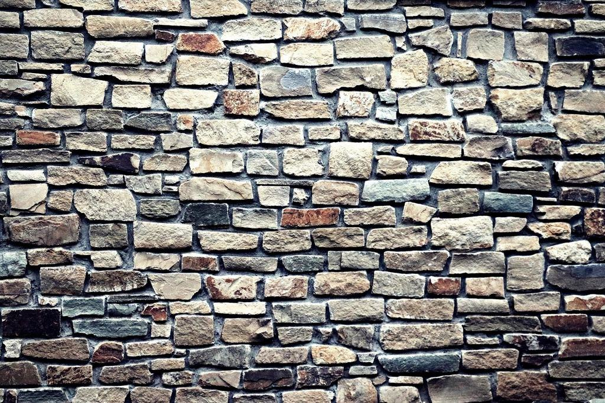

Tjänster
Sedan dess har vi renoverat drygt 600 murstockar, de flesta i Visby innanför ringmuren och på gårdar från Fårö till Hoburgen. Vi arbetar med släckt kalk från Gotland, handslaget tegel och insatsrör som går att ta bort igen utan att skada originalet.
Vilken sorts murstock har du?

Murstockar i kalksten
Gotländska murstockar är ofta murade av kalksten med kalkbruk direkt från öns kalkugnar. Cementfogar som lagts under 1900-talet spräcker stenen, och vi ersätter dem med kalkbruk i rätt hårdhet.
Vi blandar bruket själva i verkstaden i Visby och anpassar det efter stenens skick.

Insatsrör som kan tas bort
Ett insatsrör gör en gammal kanal säker att elda i igen. Vi väljer rörlösningar som kan dras ut utan att murverket behöver brytas upp.
För byggnadsminnen tar vi fram underlag till länsstyrelsen innan arbetet börjar.

Kyrkor och kulturbyggnader
Ön har 92 medeltida kyrkor, och många har kaminer och murstockar från 1800-talet. Vi arbetar i samråd med stiftets byggnadsantikvarie och dokumenterar varje steg.
Ställningar och väderskydd monteras så att inget fäster i den medeltida muren.

Gårdar och kalkstensmagasin
På gotländska gårdar står ofta murstockar som byggts om i flera omgångar. Vi kartlägger kanalerna, stänger det som inte används och renoverar det som ska eldas i.
Vanligt uppdrag: bakugnen ska tändas igen efter femtio år.
Från första inspektion till första brasan
- 1

Besiktning
Vi går upp på taket, filmar kanalen och provtrycker. Besiktningen kostar 2 400 kronor och dras av om du anlitar oss.
- 2

Åtgärdsförslag
Du får en rapport med bilder, förslag i två nivåer och fast pris – och vid behov underlag till länsstyrelsen.
- 3

Hantverket
Murare och sotare arbetar tillsammans. Kalkbruk härdar långsamt, så vi planerar arbetet mellan april och oktober.
- 4

Kontroll och eldning
Vår skorstensfejartekniker provtrycker kanalen och godkänner den innan du tänder första brasan.
Hantverksbrev och behörigheter
- Gesällbrev i murningAnders och två kollegor har gesällbrev i murning och yrkesbevis från Byggbranschens Yrkesnämnd.
- SkorstensfejarteknikerTvå tekniker med behörighet att kontrollera och godkänna rökkanaler enligt MSB:s föreskrifter.
- Kalkbruk och byggnadsvårdHela murarlaget har gått Hantverkslaboratoriets kurser i kalkbruk vid Göteborgs universitet i Mariestad.
- StällningsbehörighetUtbildning för allmän ställning upp till nio meter enligt Arbetsmiljöverkets föreskrifter.